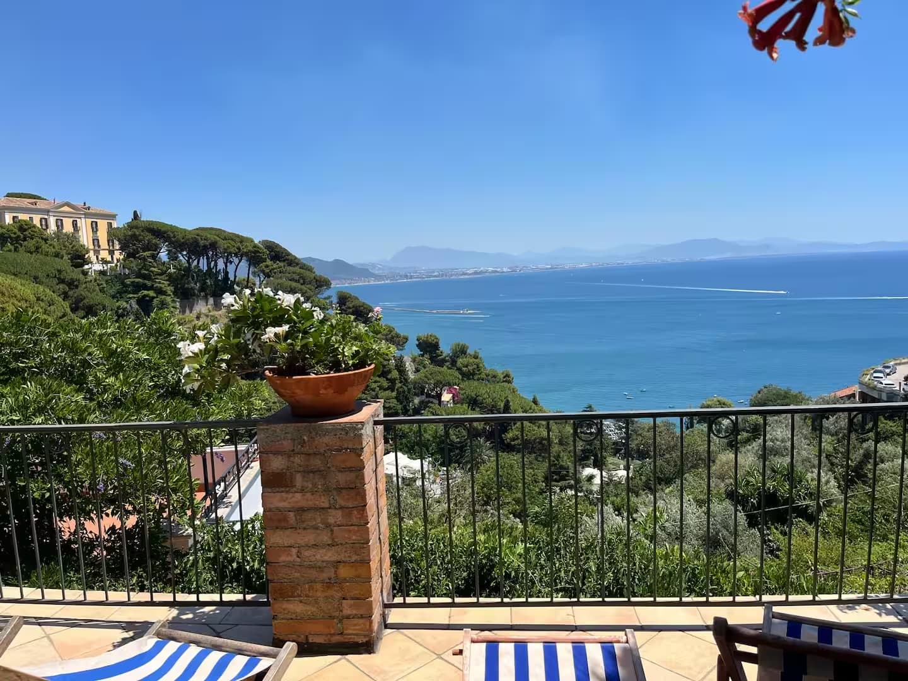

Sea views over the Gulf of Salerno
Open coastal views from terraces and outdoor areas.

Set in the quiet village of Raito, above Vietri sul Mare, Villa San Vito is designed for travelers who want space, privacy and a slower way to experience the Amalfi Coast. The villa offers three levels, outdoor terraces, a private garden and open views toward the Gulf of Salerno, while keeping guests within reach of Salerno, Amalfi, Ravello, Positano, Paestum and Pompeii.
Selected scenes from the terraces, garden, interiors and coastal setting.
Open coastal views from terraces and outdoor areas.
Outdoor spaces for breakfast, reading and relaxed evenings.
Generous indoor and outdoor space for families and small groups.
A dedicated study area supports remote work and longer stays.
Outdoor parking for 2 to 3 cars, a valuable comfort on the coast.
Cook at home after exploring nearby towns and coastal villages.
Within reach of Amalfi, Ravello, Positano, Paestum and Pompeii.
The host speaks English, Spanish and Italian.
Villa San Vito gives each part of the stay its own rhythm: open living areas on the ground floor, restful bedrooms above, and terraces that keep the sea in view.
A spacious living room, fully equipped kitchen and dining area open toward the furnished terrace and private garden. An outdoor bathroom adds convenience for time spent outside.
A work and study area sits alongside two bedrooms with single beds, a full bathroom and a separate shower, giving guests flexibility and quiet corners.
The main bedroom has a double bed, a bathroom with bathtub and a large terrace overlooking the Gulf of Salerno.
The private garden, lemon tree, furnished terraces and sea-facing views create the calm outdoor living that defines the property.
Raito is a quiet village above Vietri sul Mare, known for its views, calm atmosphere and proximity to Salerno. From here, guests can explore the Amalfi Coast while returning to a private and peaceful home base at the end of the day.
The website can show the general area only. Exact address details may be handled through the booking platform.
A nearby coastal town known for ceramics, sea views and relaxed local character.
A practical gateway for transport, dining and waterfront walks near the Amalfi Coast.
One of the coast's signature towns, suitable for a scenic day trip.
A refined hill town loved for gardens, views and cultural heritage.
A famous vertical seaside village reachable as part of a coastal itinerary.
An essential archaeological site for travelers interested in Roman history.
A rewarding day trip for Greek temples, archaeology and open landscapes.
Choose the marketplace you already trust. Prices, availability and cancellation policies are confirmed directly on each platform.
View the Airbnb listing, reviews and reservation details.
Book on AirbnbCompare Booking availability, policies and traveler information.
Book on BookingView the Vrbo listing and booking details.
Book on VrboAll reservations, payments, availability and cancellation policies are managed directly by Airbnb, Booking or Vrbo. This website is an informational showcase for Villa San Vito.
Highlights guests mention: views, hospitality, location, parking, outdoor spaces and comfort.
Este es un muy buen lugar. Vista espectacular desde un patio trasero enorme. El alojamiento estaba en buenas condiciones. Muy recomendable. El estacionamiento es un poco estrecho, pero nos avisaron bien de eso. Así que no hubo sorpresas.
Use only real reviews copied with permission or short, platform-compliant excerpts.
No. Reservations are handled exclusively through Airbnb, Booking or Vrbo.
You can choose the platform you prefer. Availability, prices and cancellation policies may vary by platform.
Yes. The villa can host up to 6 guests and offers multiple bedrooms, outdoor areas and a fully equipped kitchen.
Yes. Private outdoor parking is available inside the property.
Yes. The villa offers fast WiFi and an extender for outdoor areas.
Check-in is from 3:00 PM to 5:00 PM. Check-out is before 11:00 AM.
The website may show the general area. Exact details can be managed through the booking platform.
No. Guests should check the final cancellation policy on the platform they use to book.